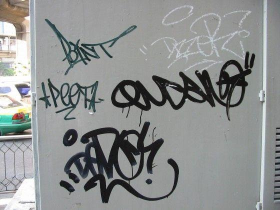
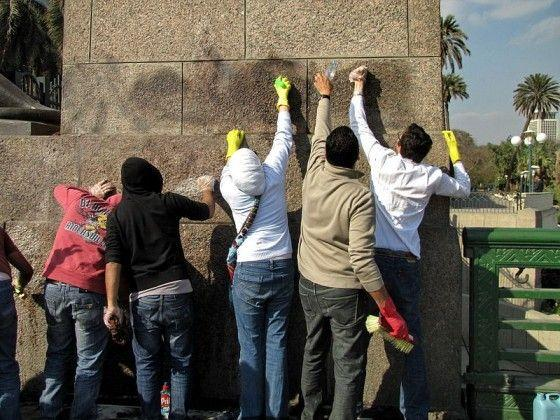

1. Graffiti as it’s known today began in the late 1960s in Philadelphia.
It was primarily used to make political statements and mark street gang territory.
2. One of the first known graffiti artists was called Cornbread.
His name is Darryl McCray, but he was known by his tagging name, Cornbread.
3. Many graffiti artists tag their work.
“Tagging” is a way for street artists to sign their name anonymously.
They often use random words or symbols and then embellish them with stars or crowns.

4. The Philadelphia Anti-Graffiti Network was founded in 1984 to fight the spread of graffiti.
The agency is backed by the city of Philadelphia and provides resources to businesses who need help eradicating vandalism of their property.
They also have a Mural Arts Program which allows youth to express themselves by creating murals throughout the city.
Similar agencies have popped up in cities around the U.S.

5. While most laws surrounding graffiti are local, there is a federal law prohibiting railroad vandalism.
The law is a strategy to prevent trespassing on railroad property and vandalism affecting railroad safety.
Their main concern in creating this law was safety.